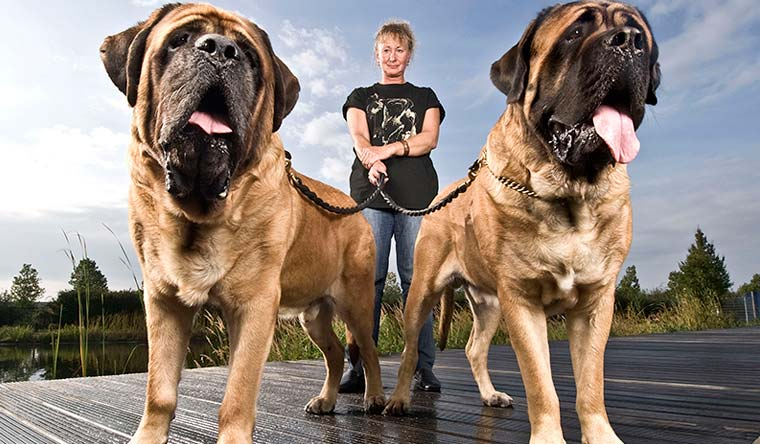

بزرگترین سگ دنیا از چه نژادیه؟ بزرگترین سگهای ایران کدوما هستن؟ بزرگترین سگ جهان چند متره؟ بطور کلی منظور از نژادهای سگ بزرگ، نژادهایی هست که متوسط وزنشون بیشتر از حدود ۴۵ کیلو باشه. خیالت راحت، ما این راهو بلدیم و تو این مقاله پت پرس میخوایم با غولپیکرترین، قویترین و بزرگترین سگهای دنیا آشنا بشیم. در ادامه با ما همراه باشین تا با این نژادهای بزرگ آشنا بشیم.
انتخاب نژاد مناسب سگ: سگ بزرگ به سرپرستی بگیریم؟
بیشتر نژادهای بزرگ و غولپیکر سگ خیلی خوشاخلاق، وفادار و دوستداشتنی هستن و معمولا هم از نژادهای کوچک آرومترن و انرژی و جنب و جوش بیش از حد ندارن. به همین خاطره که خیلیها معتقدن نژادهای بزرگ، سگهای آپارتمانی خوبی میتونن باشن. البته ورزش و فعالیت روزانه برای سگهای بزرگ هم کاملا ضروریه.
ضمنا خیلی از نژادهای بزرگ سگ نسبتا راحت تربیت میشن. ولی باید یادتون باشه که خیلی از این نژادها برای کار یا نگهبانی پرورش داده شدن و ممکنه ذات و غریزه خشنی داشته باشن. به همین خاطر باید حتما خوب آموزش داده بشن و از بچگی با آدمها معاشرت کنن تا این غرایزشون مهار بشه.
از دیگر مشکلات نگهداری از سگهای غولپیکر
سگهای غولپیکر مشکلات دیگهای هم دارن، مثلا:
- هزینه غذا و مراقبت ازشون بیشتره
- به بیماریهای مفصلی و استخونی و نفخ شکم حساسن (باید مرتب برای معاینه پیش دامپزشک ببرینشون)
- آب دهنشون دائم سرازیره (چون فکشون خیلی بزرگه)
- ایکس لارج خرابکاری میکنن (ادرار و مدفوع)
- و بدتر از همه این که طول عمرشون نسبتا کمه (معمولا حدود ۶ تا ۱۰ سال، در حالی که بیشتر سگهای کوچک و متوسط راحت ۱۲ تا ۱۵ سال عمر میکنن).
اگه تو انتخاب نژاد سگ شک دارین و نمیدونین که کدوم یکی از نژادای سگ برای شما و شرایط زندگیتون مناسبه، خیالت راحت، ما این راهو بلدیم.
برای من با علایق، سبک زندگی و شرایط محیط اطرافم چه نژادی از بقیه بهتر و سازگارتره؟ این کتاب به این سوال پاسخ میده. یه تست داره، میزنی و میرسی به بهترین نژادی که برات خوبه و با راهنمایی های بعدی کتاب درباره جنسیت و اسم سگ تصمیم میگیری.

معرفی بزرگترین سگهای دنیا
اول اجازه بدین با چند تا از بزرگترین نژادهای سگ در دنیا آشنا بشیم.
سگ بوردو یا ماستیف فرانسوی
ماستیف فرانسوی فوقالعاده قویه و وزنش تقریبا به ۵۰ کیلو میرسه. اندازه سر این نژاد از همه سگهای دیگه جهان بزرگتره ولی چشمهای مهربون و قیافه خیلی بامزهای داره. ماستیف فرانسوی واقعا وفاداره و عاشق خانواده صاحبشه، اما ذاتش لجبازه و قطعا نیاز به آموزش داره.
دیرهاند اسکاتلندی
این نژاد فوقالعاده کمیاب یکی از قد بلندترین نژادهای سگه جهانه و با وجود این هیکل درشت، سگ خوش اخلاقیه و در نتیجه برای نگهبانی چندان خوب نیست. دیرهاند اسکاتلندی وقتی بچه است فعالیت و بازیگوشی خیلی زیادی داره اما هرچی سنش بالاتر میره آرومتر میشه (اگه میخواین بهترین نژادهای سگ نگهبان در ایران رو بشناسین، پیشنهاد میکنیم حتما مقاله سگ نگهبان رو مطالعه کنین).
لئونبرگر
نژاد لئونبرگر تو آلمان به عنوان سگ خانگی پرورش داده شد و با وجود این که قیافهای شبیه یک شیر کوچیک داره، طبعش خیلی لطیف و مهربون و صبوره. ولی اگه درست تربیت بشه میتونه بهترین نگبان هم باشه یا مثل یک اسب کار کنه.
ولفهاند ایرلندی
ولفهاند ایرلندی یکی از قد بلندترین نژادهای سگ دنیاست که زمان قدیم به عنوان سگ جنگی تربیت میشد و یکی از بزرگترین سگهای جنگی دنیا بوده، اما اگه تو خونه بزرگ بشه یکی از شیرینترین و دوستداشتنیترین نژادهای سگه و با بچهها و حیوونای دیگه هم فوقالعاده مهربونه.
سگ گله آناتولی
این نژاد باستانی خیلی باهوشه و تا پای جون از آدمهایی که دوستشون داره محافظت میکنه. این سگها شخصیت قوی و سلطهطلبی دارن و صاحبشون هم باید یک آدم مقتدر و جدی باشه تا بتونه کنترلشون کنه. وزن سگ گله آناتولی تا حدود ۷۰ کیلو میرسه (اطلاعات بیشتر درباره باهوش ترین نژادهای سگ در دنیا و همچنین ویژگی ها و شرایط نگهداریشون رو میتونین توی مطلب باهوش ترین نژاد سگ بخونین).
سنت برنارد
سگهای غولپیکر سنت برنارد طبع بازیگوشی دارن و مهربونی و صبرشون هم نهایت نداره، طوری که بعضیا بهشون میگن “سگ پرستار بچههای آدم”. از این نژاد برای پیدا کردن و نجات مسافرای گم شده تو کوههای آلپ سوئیس استفاده میشد چون علاوه بر ذات مهربونشون، قدرت زیادی هم دارن. وزن سگ سنت برنارد معمولا از ۵۵ تا ۸۰ کیلو هست و به گرما حساسیت دارن.
نیوفاندلند
سگهای نیوفاندلند هم با وجود جثه درشت و قدرت زیاد، خیلی مهربون هستن و میتونن بهترین سگ خانگی و دوست بچهها باشن، در حدی که سناتور رابرت کندی و خانومش برای مراقبت از ۱۱ تا بچهشون از سگ نیوفاندلندشون (بروموس) استفاده میکردن. ضمنا این نژاد شناگرای فوقالعاده ماهری هستن و همراه دریانوردا به مسافرتهای دور و دراز میرفتن. خیلیا هم برای کشیدن سورتمه ازشون استفاده میکردن.
ماستیف انگلیسی
قد ماستیفهای انگلیسی نر تا شونه به حدود ۷۵ سانت و وزنشون به بالای ۱۱۰ کیلو هم میرسه و سر و دهن خیلی بزرگی هم دارن. از این سگها تا چند قرن پیش تو انگلیس به عنوان سگ شکاری برای شکار حیوونای بزرگ مثل گاو و خرس، نگهبانی یا جنگ استفاده میشد ولی حالا بیشتر به یک نژاد خانگی تبدیل شدن چون خیلی وفادار و توی خونه آروم هستن.
بعضی انواع دیگه ماستیف که از نژادهای غول پیکر جهان هستن شامل نژادهایی مثل:
- نئوپولیتن
- سگ تبتی
- بول ماستیف
- داگو آرژانتینو
سگ کانگال
سگهای کانگال توی منطقه سیواس ترکیه برای محافظت از دامها در برابر شکارچیهای بزرگ از جمله گرگ و خرس پرورش داده شدن. این سگها با بچهها مهربون هستن ولی به غریبههایی که به نظرشون خطرناک بیان رحم نمیکنن.
گریت دین
قد گریت دین تا شونه به ۸۰ سانت میرسه و وقتی روی دو تا پاشون وایستن از بیشتر انواع دیگه سگ و حتی از بعضی آدما قد بلندترن. این سگها راحت با بقیه دوست میشن ولی ممکنه بخوان در مقابل غریبهها از افرادی که دوستشون دارن محافظت کنن و اینجور وقتا میتونن خطرناک باشن. جالبه که گریت دین با وجود این جثه درشت، جزء سریعترین سگها هم هست.
سگ بزرگ پیرنه
این سگها قدرت زیادی دارن چون علاوه بر نگهبانی، برای کشیدن بار و سورتمه هم ازشون استفاده میشده، و با دو لایه موی ضد آبشون برای مراقبت از گوسفندا تو کوههای پیرنه ایدهآل بودن. سگهای پیرنه آروم و کم تحرک و خیلی باوقارن (غیر از وقتهایی که بخوان از گله دفاع کنن) و وزنشون تا ۴۵ کیلو هم میرسه.
کن کورسو (ماستیف ایتالیایی)
کن کورسو با وزن بیشتر از ۴۵ کیلویی و بدن عضلانی و قوی و حواس خیلی جمع، یکی از بهترین نژادها برای نگهبانیه.
این سگها غریزه خیلی قوی برای محافظت از قلمرو خودشون دارن و اگه حس کنن کسی صاحبشون رو تهدید میکنه، تیکه بزرگه طرف گوششه. نگهداری از این نژاد برای افراد کم تجربه توصیه نمیشه چون ممکنه نتونن از پس قدرت فوقالعاده کن کورسوها بربیان.
سگ کوهستانی برنی
این سگهای شیرین و دوست داشتنی یکی از قشنگترین نژادهای سگ هستن و موهای خیلی پرپشتی دارن که برای زندگی تو کوههای سرد سوئیس لازم بوده (برای آشنایی با زیباترین نژادهای سگ در ایران و جهان سری به مقاله خوشگل ترین سگ دنیا بزنید).
تریر سیاه روسی
این نژاد رو ارتش روسیه در دهه ۱۹۳۰ با ترکیب کردن سگهای مختلفی مثل جاینت اشناوتسر، تریر ایردیل و نیوفاندلند پرورش داد. تریرهای سیاه روسی به هوش زیاد و سلطهطلبی معروفن و وزنشون هم تا حدود ۶۰ یا ۶۵ کیلو میرسه و به همین خاطر به یک صاحب قوی و باتجربه احتیاج دارن. این سگها خیلی شلوغکار هم هستن و همه وسایل خونه رو به هم میریزن.
در مورد نژادهای روسی اگه میخواین بیشتر بدونین، مطلب سگ روسی رو حتما بخونین.
سگ گله قفقازی
سگهای گله قفقازی یکی از بزرگترین نژادهای سگ هستن که میتونن سگهای نگهبان بینظیری باشن. این سگها حدود ۶۰۰ سال پیش برای شکار خرس تو کوههای روسیه پرورش داده شدن و خودشون هم با ۹۰ کیلو وزن از دور شبیه خرس به نظر میرسن. این نژاد خیلی فعال و پرکاره و به آموزش و فعالیت بدنی زیادی احتیاج داره، و ضمنا به خاطر لجبازی و قدرت فوقالعادهاش حتما باید زیر دست یک صاحب خیلی باتجربه باشه.
کوموندور Komondor
وزن کوموندورهای نر به بیشتر از ۴۵ کیلو میرسه، ولی خیلی سریع و چابک هستن. این سگها نسبت به اعضای خانواده مهربون و وفادارن اما روحیه خیلی مستقلی دارن و در نتیجه باید حتما یک مربی با تجربه تربیتشون کنه. توی مطلب سگ کوموندور با ویژگیهای ظاهری و اخلاقی منحصر به فرد این نژاد بیشتر آشنا بشین.
سگ بزرگ کوهستانی سوئیس
این سگها برای نگهبانی و مراقبت از گلههای گاو پرورش داده شدن و بهتره توی آپارتمان ازشون نگهداری نکنین چون هنوز عاشق گشت و گذار و خدمت کردن به صاحبشون تو فضای باز هستن. در ضمن صدای پارس کردنشون هم ممکنه همسایهها رو اذیت کنه، ولی قلب مهربونی دارن. فقط باید حتما از بچگی تربیت بشن و با آدما و حیوونای دیگه معاشرت کنن. تولههای این نژاد یک خورده دیر بالغ میشن.
سگ گله بوکووینا
این نژاد درشت و قوی و مقاوم تو رومانی برای نگهداری و محافظت از گلهها پرورش داده شد. سگهای گله بوکووینا آروم و باهوش هستن و معروفه که میتونن گرگها را شکار کنن. این سگها باید حتما از بچگی آموزش ببینن و با آدما و حیوونای مختلف معاشرت داشته باشن وگرنه ممکنه سلطهجو و وحشی و گوشهگیر بشن.

قدبلندترین سگهای جهان
حالا ببینیم قد بلندترین نژادهای سگ کدوما هستن …
| نژاد | اسامی دیگه | محل پرورش | قد سگ نر | قد سگ ماده | وزن سگ نر | وزن سگ ماده | طول عمر |
| ۱- ولفهاند ایرلندی | ایرلند | متوسط ۷۱ تا ۸۹ سانت/ حداکثر ۹۴ سانت | ۴۰ تا ۶۹ کیلو | ۶ تا ۸ سال | |||
| ۲- گریت دین | دویچه دوگ یا ماستیف آلمانی | آلمان | متوسط ۷۶ تا ۸۶ سانت/ حداکثر ۱۰۷ سانت | ۷۱ تا ۸۱ سانت | ۵۴ تا ۹۰ کیلو | ۴۵ تا ۵۹ کیلو | ۷ تا ۹ سال |
| ۳- دیرهاند اسکاتلندی | اسکاتلندی | متوسط ۷۶ تا ۸۱ سانت/ حداکثر ۸۹ سانت | ۷۱ تا ۷۵ سانت | ۳۸ تا ۴۵ کیلو | ۳۴ تا ۴۳ کیلو | ۸ تا ۹ سال | |
| ۴- هاسکی تاماسکان | سگ گرگی تاماسکان | فنلاند | متوسط ۶۳ تا ۷۱ سانت/ حداکثر ۸۶ سانت | ۶۱ تا ۶۶ سانت | ۳۰ تا ۴۵ کیلو | ۲۳ تا ۳۸ کیلو | ۱۴ تا ۱۵ سال |
| ۵- سگ بزرگ پیرنه | ماستیف پیرنه، سگ کوهستانی پیرنه | آسیای مرکزی/ سیبری | متوسط ۷۰ تا ۸۲ سانت/ حداکثر ۸۴ سانت | ۶۵ تا ۷۴ سانت | ۵۰ تا ۵۴ کیلو | ۳۶ تا ۴۱ کیلو | ۱۰ تا ۱۲ سال |
| ۶- ماستیف نئاپولیتن | ماستینو یا ماستینی | ایتالیا | متوسط ۶۳ تا ۷۷ سانت/ حداکثر ۸۱ سانت | ۵۸ تا ۷۰ سانت | ۶۰ تا ۷۰ کیلو | ۵۰ تا ۶۰ کیلو | ۸ تا ۱۰ سال |
| ۷- سگ گله بوکووینا | سگ گرگی بوکووینا | رومانی | متوسط ۶۸ تا ۷۸ سانت/ حداکثر ۸۴ سانت | ۶۴ تا ۷۲ سانت | ۵۴ تا ۶۸ کیلو | ۳۲ تا ۴۱ کیلو | ۱۲ تا ۱۴ سال |
| ۹- کانگال | قراباش | ترکیه | متوسط ۷۷ تا ۸۶ سانت/ حداکثر ۹۰ سانت | ۷۲ تا ۷۷ سانت | ۵۰ تا ۶۶ کیلو | ۴۱ تا ۵۴ کیلو | ۱۲ تا ۱۵ سال |
| ۹- لئونبرگر | آلمان | متوسط ۷۲ تا ۷۹ سانت/ حداکثر ۸۱ سانت | ۶۵ تا ۷۵ سانت | ۴۸ تا ۷۵ کیلو | ۴۱ تا ۵۹ کیلو | ۸ تا ۱۰ سال | |
| ۱۰- سگ گله آناتولی | چوبان کوپگی | آناتولی ترکیه | متوسط ۷۱ تا ۷۶ سانت | ۶۶ تا ۷۱ سانت | ۴۵ تا ۶۸ کیلو | ۴۱ تا ۵۹ کیلو | ۱۲ تا ۱۵ سال |
از نظر میانگین قد، ولفهاند ایرلندی بلندترین نژاد سگ دنیاست ولی بعضی گریت دینها قدشون از ولفهاند هم بیشتر میشه. رکورددار قدبلندترین سگ جهان یک سگ گریت دینه.
قویترین سگهای جهان
حالا میخوایم سگهای مختلف رو از نظر قدرت فک مقایسه کنیم. این رده بندی رو از آخر به اول معرفی میکنیم و با ۱۵ تا سگ که قویترین فک رو دارن بهتون
۱۵- مالاموت آلاسکایی
مالاموت آلاسکایی سگ پر زوریه چون برای کشیدن سورتمه ازش استفاده میشده. خیلیا این نژاد رو با هاسکی اشتباه میگیرن در حالی که این دو تا تفاوتهای زیادی با هم دارن. مهمترین فرق این دو نژاد، اندازهشونه. مالاموتها بزرگترن و وزنشون تا ۴۵ کیلو هم میرسه، و میتونن یک بار ۵۰۰ کیلویی تا یک تنی رو توی مسافتهای کوتاهی بکشن.
قدرت فک: ۱۵.۶ کیلو بر سانتیمتر مربع
۱۴- ولفهاند ایرلندی
قدرت فک: ۱۵.۷۵ کیلو بر سانتیمتر مربع
۱۳- ریجبک رودزیایی
این نژاد که بعضیا بهش «شیر سگ آفریقایی» هم میگن، شخصیت خیلی مستقلی داره و باید یک مربی کاربلد از اوایل بچگی تربیتش کنه. ریجبکها عاشق پرسه زدن و دور شدن از خونه هستن و به درد زندگی تو آپارتمان یا جاهایی که فضای محدودی داره نمیخورن.
قدرت فک: ۱۵.۷۵ کیلو بر سانتیمتر مربع
۱۲- سنت برنارد
قدرت فک: ۱۶.۵۲ کیلو بر سانتیمتر مربع
۱۱- گریت دین
قدرت فک: ۱۶.۷۳ کیلو بر سانتیمتر مربع
- سگ بزرگ پیرنه
قدرت فک: ۱۶.۸۷ کیلو بر سانتیمتر مربع
۹- نیوفاندلند
قدرت فک: ۱۶.۸۷ کیلو بر سانتیمتر مربع
۸- روتوایلر
روتوایلر یکی از وحشی ترین نژادهای سگه و وزنش میتونه تا ۶۰ کیلو هم برسه. خیلیا فکر میکنن این نژاد ذاتا وحشیه، ولی روتوایلری که خوب آموزش دیده باشه به هیچکس حمله نمیکنه مگه این که تحریکش کرده باشن. میتونین برای دونستن لیست وحشی ترین نژادها هم مطلب خطرناک ترین سگ دنیا رو بخونین!
روتویلرها خیلی هم باهوشن و به عنوان سگ خونگی یا برای انجام کارهای مختلف عالی هستن. این نژاد در اصل برای نگهبانی، جنگ و مراقبت از گله پرورش داده شده.
قدرت فک: ۲۳ کیلو بر سانتیمتر مربع
۷- لئونبرگر Leonberger
قدرت فک: ۳۰.۹۳ کیلو بر سانتیمتر مربع
۶- توسا اینو
ریشه نژاد توسا اینو به ژاپن برمیگرده و هیکل عضلانی و قدرت خیلی زیادی داره. ژاپنیها این نژاد رو برای جنگ پرورش داده بودن و بعد از جنگ جهانی دوم چیزی نمونده بود که نسلش منقرض بشه ولی خوشبختانه این اتفاق نیفتاد.
سگهای توسا اینو ذات آرومی دارن و نسبت به صاحبشون وفادار و مهربون نسبت هستن، ولی اگه خوب آموزش نبینن و اجتماعی نشن ممکنه پرخاشگری کنن.
قدرت فک: ۳۵.۱۵ کیلو بر سانتیمتر مربع
۵- ماستیف انگلیسی
قدرت فک: ۳۸.۸ کیلو بر سانتیمتر مربع
۴- بوئربوئل
نژاد بوئربوئل یک نوع ماستیف درشت و عضلانی و قویه که شخصیت سلطهجو و استقلالطلبی داره و باید از همون زمانی که به دنیا میاد کاملا تحت آموزش قرارش بدین تا بعدا پرخاشگر نشه.
این سگها برای محافظت از آدما توی آفریقا پرورش داده شدن و ذاتا یک نژاد محافظ و نگهبان هستن. بوئربوئلها برای دفاع از خونه یا قلمرو خودشون به هر موجودی که تهدیدآمیز به نظر برسه حمله میکنن و قدرت جسمی و قدرت فک بسیار زیادشونی هم دارن. به همین خاطر نگهداری این نژاد برای افراد کم تجربه مناسب نیست.
قدرت فک: ۴۹.۲ کیلو بر سانتیمتر مربع
۳- کن کورسو
قدرت فک: ۴۹.۲ کیلو بر سانتیمتر مربع
۲- بانداگ
قدرت بانداگها از بدن عضلانیشون کاملا مشخصه. این سگها به پرخاشگری معروف شدن ولی معمولا علت این رفتارشون، تربیت نامناسبه. هیکل درشت و قدرت فوقالعاده بانداگها باعث میشه که حتما به یک صاحب با تجربه و آموزش مناسب احتیاج داشته باشن.
این نژاد اگه درست تربیت بشه یک نژاد عالی به عنوان سگ خونگی، گله یا نگهبانه.
قدرت فک: ۵۱.۳۲ کیلو بر سانتیمتر مربع
۱- کانگال
سگهای کانگال با وجود این که خیلی کوچکتر و سبکتر از نژادهایی مثل ماستیف انگلیسی یا گریت دین هستن، قویترین فک رو در بین سگهای جهان دارن که البته شاید طبیعی هم باشه چون قرنهاست که نگهبان گلهها بودن و باید با حیوونای شکارچی بزرگ درگیر میشدن.
قدرت فک: ۵۲.۲۴ کیلو بر سانتیمتر مربع
اینجا بد نیست که عددهای بالا رو با قدرت فک قویترین سگهای متوسط مقایسه کنیم:
| نژاد | قدرت فک (کیلو بر سانتیمتر مربع) |
| ۷- مالینویز | ۱۳.۷ |
| ۶- چاو چاو | ۱۵.۴۷ |
| ۵- هاسکی سیبرین | ۱۵.۷۵ |
| ۴- دوبرمن | ۱۶ |
| ۳- باکسر | ۱۶.۱۷ |
| ۲- پیت بول آمریکایی | ۱۶.۵ |
| ۱- ژرمن شپرد | ۱۶.۷ |
اینم از فهرست بیشترین قدرت فک نژادهای سگ کوچیک:
| نژاد | قدرت فک (کیلو بر سانتیمتر مربع) |
| ۲- شولوایتزکوئینتلی (شولو) | ۱۵.۴۷ |
| ۱- بولداگ آمریکایی | ۲۱.۴۴ |
توضیح: همینطور که میبینین قدرت فک بولداگ فسقلی از سگهای غولی مثل گریت دین و سنت برنارد بیشتره، ولی توجه داشته باشین که این عددها در واحد سطحه. یعنی مثلا یک گریت دین با اون دهن بزرگش که چند برابر بولداگه میتونه گاز بدتری بگیره. برای اطلاعات بیشتر درباره این نژاد سگ، مقاله بولداگ انگلیسی رو بخونید.
بزرگترین سگ دنیا در گینس
زئوس
اول از همه باید ببینیم تعریفمون از “بزرگترین سگ دنیا” چیه. مثلا منظور فاصله بین نوک پنجه تا شونه است؟ یا فاصله نوک بینی تا دم؟ یا وزن؟ اگه قد یعنی همون ارتفاع سگ تا شونه رو در نظر بگیریم، معمولا رکورددارها از نژاد گریت دین بودن، و قدبلندترین سگی که تا حالا ثبت شده هم یک گریت دین به اسم زئوسه. قد زئوس تقریبا ۱۱۲ سانت بود و وقتی روی پاهای عقبش وایمیستاد قدش به ۲ متر و ۲۳.۵ سانت میرسید. بزرگترین سگ جهان در آمریکا زندگی میکرد و اهل شهر آتسیگو تو ایالت میشیگان بود. زئوس توی بیمارستانهای محلی کار میکرد و به بیمارای بستری شده روحیه میداد. این حیوون مهربون سال ۲۰۱۵ در سن ۶ سالگی از دنیا رفت. سال ۲۰۱۱ اسم زئوس به عنوان قد بلندترین سگ دنیا و تاریخ توی گینس ثبت شد. قبل از اون هم این رکورد در اختیار یک گریت دین دیگه به اسم جورج غولپیکر بود که قدش ۲.۵ سانت از زئوس کوتاهتر بود.
آیکاما زوربا
زوربا یک ماستیف انگلیسی اهل لندن بود که سال ۲۰۰۸ اسمش به عنوان درازترین سگ تاریخ توی گینس ثبت شد. سال ۱۹۸۷، طول این سگ از بینی تا دم رو اندازهگیری کردن: ۲ متر و ۵۱.۵ سانت! وزن زوربا در سال ۱۹۸۹ حدود ۱۵۵.۶ کیلو بود و اسمش به عنوان سنگینترین سگ تاریخ هم تو گینس ثبت شده. در واقع زوربا بزرگترین سگ در کل جهان بوده. اگه توی اینترنت دنبال عکس بزرگترین سگ دنیا یا فیلم بزرگترین سگ جهان بگردین، حتما زوربا رو میبینین و از اندازه باورنکردنیش تعجب میکنین.
بزرگترین سگهای ایران
۱- تازی ایرانی یا سلوکی
تازی ایرانی هم مثل بقیه انواع سگ تازی قد خیلی بلند و بدن باریکی داره. ارتفاع این نژاد معمولا بین ۵۸ تا ۷۱ سانت و وزنش بین ۱۵ تا ۳۰ کیلو هست و مادهها کوچیکترن، ولی طول بدنش از بینی تا دم زیاده.
۲- سگ سرابی
سگ سرابی که بهش سگ گله ایرانی یا ماستیف ایرانی هم میگن، یک نژاد درشت و سنگین با سر بزرگه.
قد این سگها معمولا بین ۷۱ تا ۸۹ سانت و وزنشون بین ۵۰ تا ۱۰۰ کیلو هست که البته مادهها کوچیکترن. نژاد سرابی یکی از قویترین سگهای جهانه. ظاهرا ریشه این سگها به شهر سراب اردبیل برمیگرده و چوپانها برای محافظت از گله در مقابل شکارچیهایی مثل گرگ و خرس ازشون استفاده میکردن.
طول عمر متوسط سگ سرابی ۱۲ تا ۱۵ ساله. مطالب بیشتر درباره سگ سرابی و تاریخچه و نحوه نگهداریش رو توی مقاله سگ سرابی بخونین.
۳- آلابای یا مازندرانی
سگ آلابای دو نوع داره: یک نوع که برای شکار خرس استفاده میشده و بزرگتره، و نوع کوچکتر و سریعتر که ازش برای شکار گربهسانان بزرگ استفاده میکردن. متوسط قد این نژاد حدود ۷۰ سانته. هر دو نوع سگ آلابای خیلی قوی و استخوندار هستن.
این سگها روحیه تهاجمی دارن و معمولا با غریبهها یا سگها و حیوونای دیگه نمیسازن. سالها پیش روسها سگ آلابای رو برای شکار خرس به کشورشون بردن.
۴- سگ پژدر
سگ پژدر که بهش ماستیف کردی یا سگ گله آشوری هم میگن، یک نژاد درشت و سنگینه که وزنش معمولا بین ۶۰ تا ۹۰ کیلو و قدش بین ۷۵ تا ۹۰ سانته (مادهها کوچکترن) و قدرت فوقالعادهای هم داره.
از این سگها به عنوان نگهبان گله استفاده میشده و به همین خاطر به غریبهها حساس هستن و اگه بوی آدم غریبهای به مشامشون برسه ممکنه خیلی پارس کنن. این سگ اخلاق تهاجمی نداره و تا جایی که ممکنه از درگیری خودداری میکنه، ولی اگه مجبور بشه بجنگه به حریف رحم نمیکنه. در کل این سگها آروم و خوشاخلاق هستن و با بچهها برخورد نسبتا خوبی دارن و راحت هم تربیت میشن، ولی به فضای بزرگی برای پرسه زدن احتیاج دارن.
این نژاد سگ حدود ۶۰۰۰ سال پیش تو منطقه آشور و بابل برای محافظت از آدما و گلهها در مقابل حیوونای وحشی مثل شیر و ببر و گرگ پرورش داده شد.
برای خوندن اطلاعات بیشتر درباره ۵ نژاد سگ ایرانی و بررسی ویژگیهای آنها سری به مقاله نژاد سگ ایرانی بزنید.
شرایط نگهداری از سگهای بزرگ
سگهای بزرگ به لونههای بزرگی احتیاج دارن تا بتونن راحت بخوابن و دمشون رو تکون بدن. این سگهای وقتی جوون هستن و هنوز کاملا تربیت نشدن، ممکنه خودشون ندونن که هیکل درشت و قدرت زیادشون میتونه دردسرساز بشه. مثلا ممکنه موقع راه رفتن به اطرافشون توجه نداشته باشن و وسایل یا حتی بچههای کوچیک رو بندازن. ولی معمولا سنشون که بالاتر میره حواسشون هم به این چیزا بیشتر جمع میشه. اینم بگم که خیلی از نژادهای بزرگ سگ تا حدود ۲ تا ۴ سالگی به اون هیکل نهاییشون نمیرسن.
آموزش مناسب و معاشرت و رفت و آمد با مردم برای سگهای بزرگ از نون شب واجبتره چون اگه این کارو نکنین ممکنه حتی بدون این که خودش بخواد به شما یا بقیه آسیب بزنه. باید حتما به سگتون یاد بدین که کنار آدما یا حیوونای غریبه آروم باشه، وگرنه نمیتونین هیچ جا ببریدش.
برای تغذیه سگهای بزرگ هم بهتره از فرمولهای غذایی مخصوص استفاده کنین تا مفاصل حیوون سالمتر بمونه. غذای مخصوص توله این نوع سگها باعث میشه بیش از حد سریع رشد نکنن و استخونها و مفصلهاشون فرسایش پیدا نکنه. حتما حواستون باشه که به نژادهای بزرگ سگ بیش از حد غذا ندین چون حتی یک ذره اضافه وزن هم میتونه مشکلات ارتوپدی مثل آرتروز رو تو این نوع سگها به وجود بیاره.
سگهای بزرگ رو باید حداقل یک یا دو بار در سال برای معاینه پیش دامپزشک ببرین. وقتی سن سگ بالاتر رفت (حدود ۶ سالگی و بیشتر)، هر سال حداقل دو بار ببرینش پیش دامپزشک تا اگه مشکلی داره بموقع تشخیص داده بشه و درباره مکملها و کارهای دیگهای که میتونین برای حفظ سلامتی حیوون انجام بدین هم سوال کنین. علاوه بر این سگهای بزرگ با توجه به جثهشون، نیاز به برنامه غذایی متفاوتی دارن که بتونه نیازهاشون کاملا تامین کنه. برای دریافت برنامه غذایی مختص نژادهای بزرگ به بخش دریافت برنامه غذایی سگ مراجعه کنین.
جمع بندی
شاید خیلیا آرزوشون این باشه که بزرگترین سگ دنیا رو داشته باشن، ولی سگهای بزرگ هم مشکلات خاص خودشون رو دارن. نژادهای زیادی از سگهای بزرگ و قوی تو کشورهای مختلف جهان از جمله خود ایران پیدا میشه. این سگها هم برای نگهبانی خیلی خوبن و هم به عنوان حیوون خونگی، چون بیشترشون روحیه آرومی دارن، ولی حتما باید درست تربیت بشن تا مشکلی برای بقیه پیش نیارن. بعضی از این نژادها هم ذات خشن یا سرسختی دارن و تربیت و نگهداریشون کار هر کسی نیست.
از کدوم یک از بزرگترین سگهای جهان خوشتون اومده؟ تا حالا از کدومشون نگهداری کردین؟ اگه سگ بزرگی دارید از تجربیات تون در نگهداری ازش برامون بگید و یا اگه میخواید سگ بزرگی رو به سرپرستی بگیرید و سوالی دارید حتما از پت پرس بپرسید!
منبع: www.rover.com